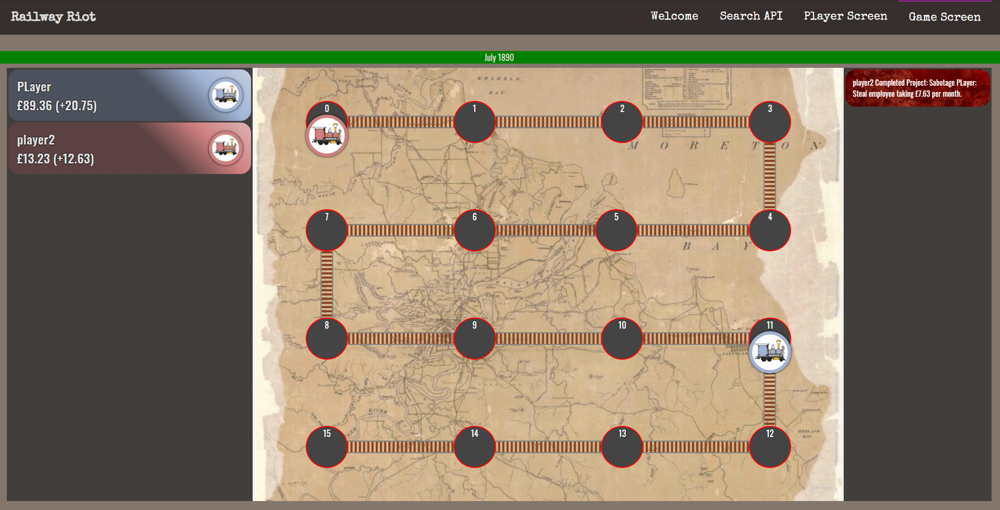
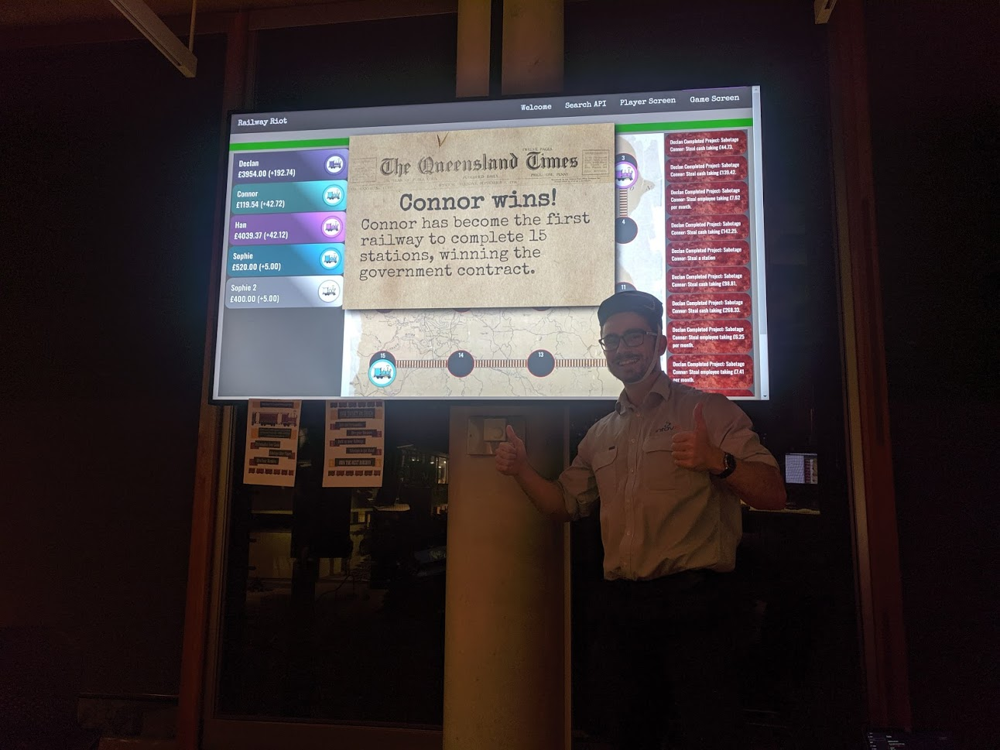
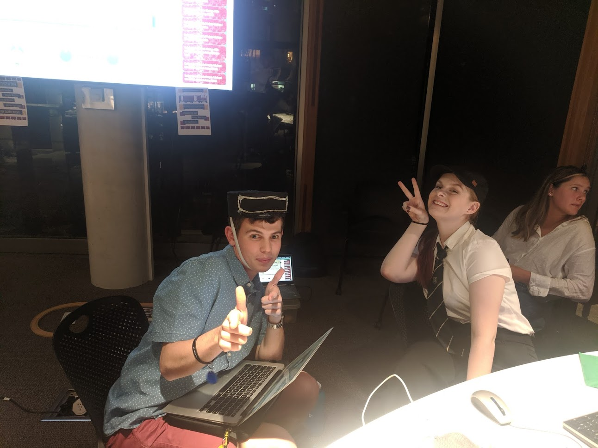
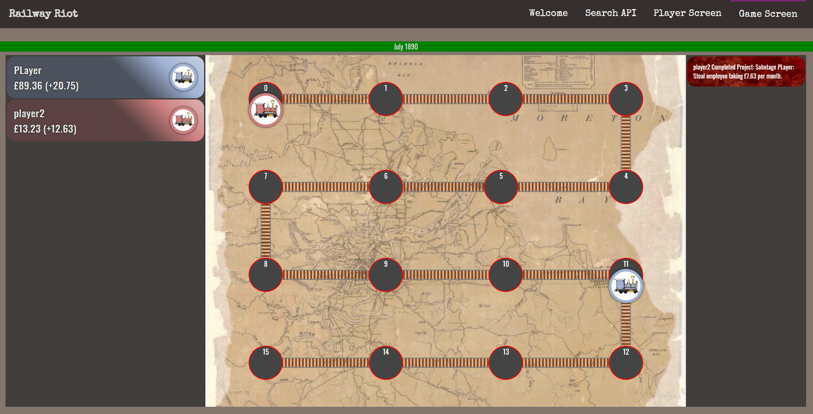
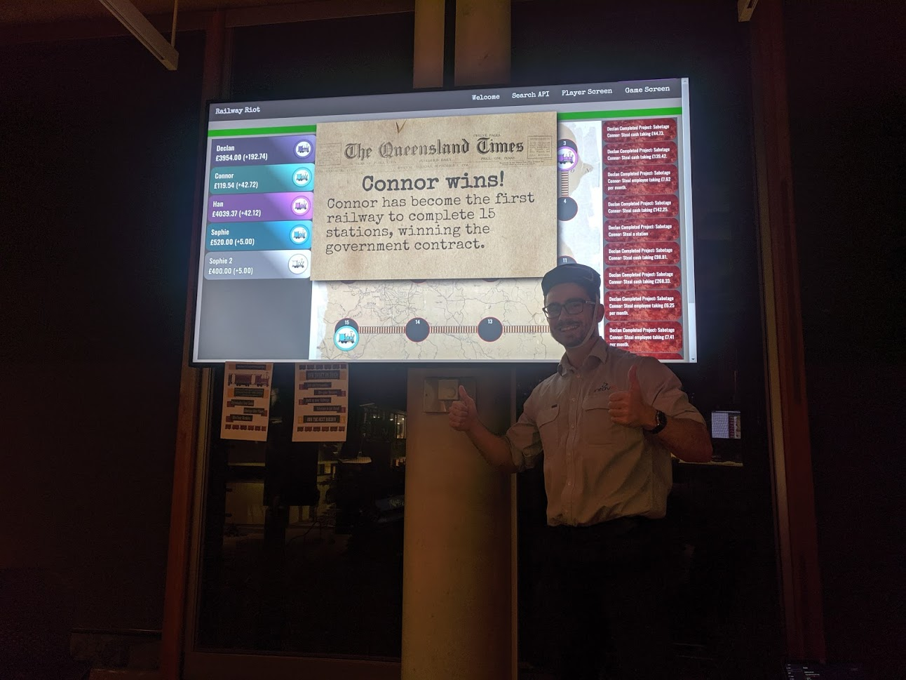
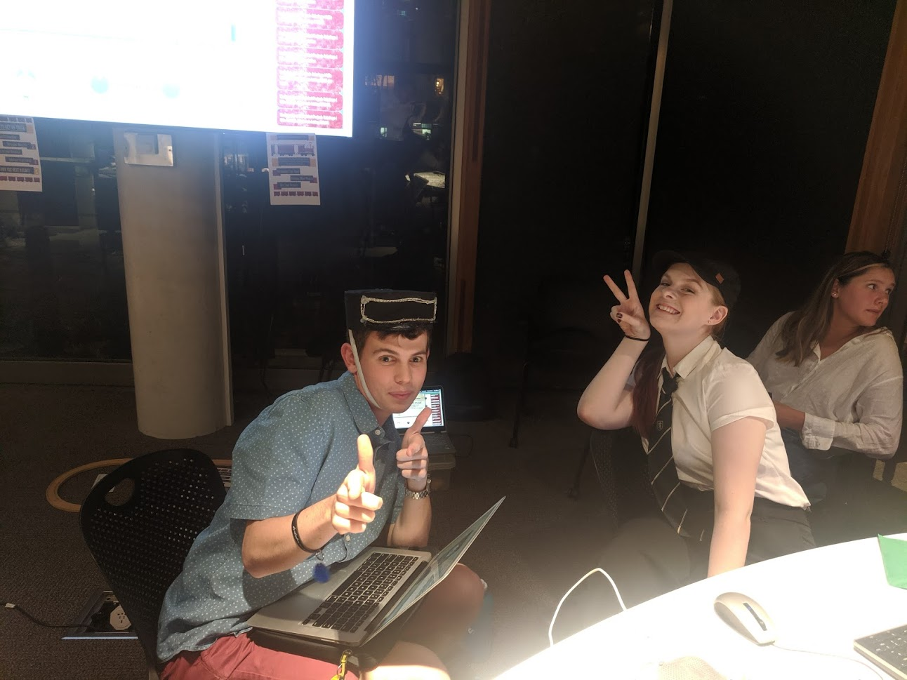

Railway Riot
A multiplayer web based application designed to enhance a museum exhibit about Queensland history.
You will conceptualise and build a mobile web-based, interactive application to enhance the experience of visitors as they navigate a fictional museum/exhibition. The application will present data from the State Library of Queensland (SLQ) to provide an alternative, digital perspective on the exhibits in the museum/exhibition.
'Project Brief'
The application takes the form of a multiplayer game in which users compete to be the first to reach the end. The users access the application on their own devices, shown on the left, while the progress of the game is shown on a large screen or projector as part of the exhibit, shown right.
As the game progresses, users will be given randomly generated projects to complete, which will require a type of employee selected from the State Library of Queensland (SLQ) dataset on Queensland railway employees (1890-1915).
Found here.
To complete a project, the user must choose between two matching employees from the dataset mentioned, with their success determined by randomly generated stats assigned to each employee.
To create more conflict and communication between users there is a sabotage mechanic in the game; for each place behind first a user is, they have a 10% chance of receiving an additional sabotage project. This project will allow the user to steal money, income, or progress from the player in first place.
The demo shown above only includes the screens that the users are able to see, however the game will not run unless a third screen containing admin controls is open. For the purpose of presenting this project at the trade show this setup was ideal, as it allowed us to adjust the state of the game to show the full functionality in a short period of time. If deployed in a museum exhibit however, modifications would need to be made to run the game either on a timer or with physical buttons that users could use to start or reset the game.
The screenshots below show the application as presented at the trade show, along with photos from the show.
 





For this project my group received a high distinction.